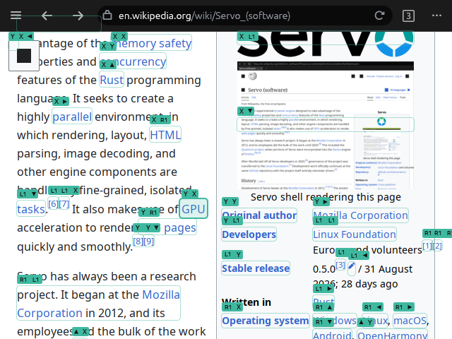

Gamepad and keyboard navigation
A virtual cursor on the stick or D-pad, Vimium-style link hints that label every link with the buttons or keys that open it, and an on-screen keyboard as a grid or a wheel.
Every browser action can be bound to a gamepad gesture or a keyboard shortcut, in the app, with tap, hold and chord.
